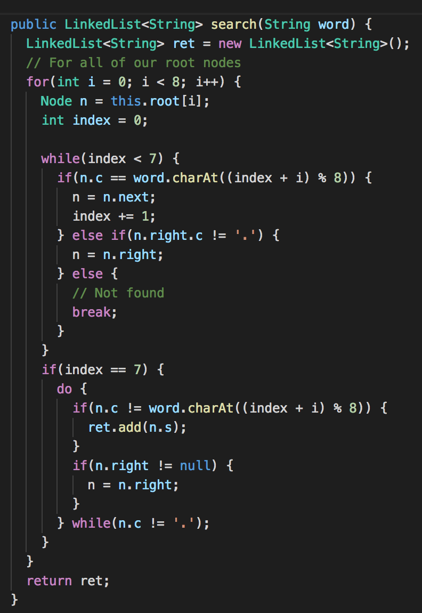

Intro
Well it's that time of undergrad, after 4 long years I'm finally here. Graduation is looming just a few short months away. My mind is racing. Where will I work? Do I start applying now? Should I apply for internships? Am I going back to grad school? Where am I going to be living? Enough! I say internally. I eventually r eason that throwing my resume out there can't be a bad thing, worst case scenario I get an interview somewhere! Thus my predicament is born. I haven't had an interview in months, and my most rigorous algorithm/data structure's course was... wow... going on 2 years now. It's been a while Farnan. I decide the best way to approch things would be to use hackerrank to brush up on my CS thinking skills. Away we go!
The Challenge
The challenge, as with almost all of them, seemed simple at first. We are given a set of 4 valid characters, a list of 'valid' 8 character sequences, and a start and end 8 character sequence. Then a 'move' is defined. Taken an 8 char sequence, and change a single char in it to create another one. The challenge is to find the minimum number of moves to get from the start sequence to the end sequence using only sequences in the 'valid' list.
['H', 'I', 'Y', 'A']
List of valid sequences:
HHHHHHHHStart, End:
HIHHHHHH
HIYHHHHH
HIYHHHAH
HHHHHHHA
HIYAHHHH
HHHHHHHH, HIYAHHHH
Start Thinking!
So right away a few words and concepts tip me off to something... 'minimum moves' sounds a lot
like 'minimum hops'. Getting from one value to another through a predefined set of
values sounds like graph traversal. So perhaps something with graphs, but what's the relation?
As you probably know a graph - at least in our context - is composed of a set of nodes,
and a set of edges that connect them (if you are new to graph's and graph theory I suggest Trudeau's amazing book
Introduction to Graph Theory).
We can thus think of a sequence HHHHHHHH as a node in our graph. Continuing
the thought we can then think of an edge as a representation of a one character differnce between nodes!
This means that HHHHHHHH has an edge connecting it to HIHHHHHH, but
not to HIYHHHHH.
AH HA! Maybe we've cracked it!
Okay so maybe that's not the prettiest diagram, but I think it gets the idea across!
We can see the way we could represent the the given values in a graph! And also that
the minimum number of hops is 3.
Start Hacking!
Now the fun begins! For this particular challenge I saw that java was available and opted for
that, in the back of my mind I had a feeling preformance would be an issue and it was! Let's
begin, of course with the hacky stuff. I'll talk about it, why it's bad, and how it lead me
to a better solution. Step one: nodes are easy! We are given an array of strings! So let's
think about the edges, we need a way to tell if two Strings are exactly 1 char
different. This is how we will know if they are 'neighbors' in our graph. I'm in a time crunch so I'm
thinking maybe I can get away with a not so great solution, but I also know to verify that
there is only 1 char different I must compare N chars (where N is the length of the strings) O(N). Not great -
but there's only 8 chars to a string, and sometimes it will fail before the end. So I'm thinking
it will be practically faster than O(N) would suggest. Here's my original block of code:
It is very simple, but it works and I am happy. The next step is to represent the graph
in code somehow. Typically this is done with a class, but I have something different in mind.
We know how many nodes we have, and so why not use a HashMap? No resizing needs to be done,
because we can allocate at the beginning. Then looking up a nodes neighbors is an O(1)
operation!
As you can see I also opted to represent the neighbors with a linked list. I did this because
we don't care about the order of the neighbor nodes, but we do need to add a lot of them.
Since add is our main operation, we choose a data structure with O(1) insertion time!
Things seem to be coming along nicely! All the time complexity stuff and Big-O is
coming back to me. I check the clock and see that I'm doing not great on time,
but hey I'm out of practice. I take a break and stretch my legs before sitting back down to write
the bad code.
Bad code? What?
Instead of explaining right away why don't I just show you:
And I combined it with this:

Ah yes, our good friend O(N2). At this point it is the most obvious
solution. I know it's bad but I ignore that and keep working, maybe I'll get lucky and the test
cases won't stress my implementation that much. I should have known better.
My next action really shows my rust. I implemented dikjstra's to find the path between start and
end. Someone astute might note that in this case (where the weights of all the edges are the same)
Dikjstra's is actually doing the same thing as BFS in a slightly different way. This means we don't
really gain anything, and I was already forgetting exactly how I wrote dikjstra's all those years
in Pitt's CS 1501 with Farnan. So once I figured that out I hacked together a working version of
the BFS algorithm. It was at this time that everything came together for the first time, and I started
getting correct answers! Exciting stuff. Time to pass it off into hackerrank and see how I do against
their test cases. At this point time wise I was hoping to be done and move on to another challenge,
hackerrank had other plans. I passed the first two examples and none of the remaining 4. By adding
a check to see if the end was even a valid sequence and making sure that start was included in the
list of valid sequences I was able to knock off 2 more. Now I'm 4/6. I'm not passing but I'm better
than 50%.
So what's the problem? Hackerrank is telling me I have a timeout... great I might actually have to
think about this some more. Time to really test my code. I am already reading from a file
to get my input, so lets throw together a python script to create example valid lists:

After adding this I also added in two debug statements, one when i started generating neighbors, and
one when I started actually preforming the BFS. It became apparent almost immediately that my code
was taking the majority of the time trying to populate the neighbor lists rather than running BFS.
More Thinking... 🤔
Clearly a problem is that I have to iterate over the entire list of valid sequences every time I want to find a new neighbor. So how can we mitigate this? My phone buzzes and I respond to my friend's text message. I think back to a cool project where I implemented a DLB trie to use as an 'autocorrect', a user types in a string and we search the DLB for strings that are similar. Specifically with the same prefix. So now I'm thinking, maybe we can shove the list into a DLB, there's lots of repeated letters so space shouldn't be an issue. At this point I also have no clear idea how this will work at all. Since I know the for letters I could always substitute each one for each location in the sequence that I am looking for neighbors for. This is a bad solution though, because it will require string operations. And string operations are unbelievably slow in java. I want to avoid them at all costs. So I'm thinking in the trie's search function i can do some magic. If I would have tried that's exactly what it would have been. Magic.My head hurts, this seems like a good solution but it just doesn't quite fit. It works great if I want a list of all the sequences with a different last letter, because of course the prefix is the same. If only there was a way to change the prefix.
My first aha moment, my friend is mid sentence with me. Telling me something important about an upcoming flight. I cut her off "What if I reverse it!" I exclaim! She is confused, and I apoligise, but we've all been there when we finally see the problem in the right light. I get my code high-five (which is the way my non-computer science friends acknowledge that something awesome happend) and immediately start drawing out tries.
At first I thoguht only about reversing the sequence I was looking for. I thoguht about this because I was trying to figure out how I would check the very first character for different neighbors. After some time I realized that I could generalize things. Here was my breakthrough:
Let's store 8 diffrent roots in our trie structure. Each will have an offset according to it's position in the array. This shifts index of the letter we want to check to the end of each trie. We can then continue down until there are no more nodes 'right' and we have a list of all neighbors, without looking trough the whole list of valid nodes. In fact we only have to search through 8, and because of the properites of a trie this is very efficient. Oh, and still no string operations required.
Here is a diagram to explain what is going on. For simplicity I have limited my string length to 4 instead of 8. We are also using
['A', 'B', 'C', 'D'] as our set of valid chars, in an attempt to be
less confusing. In the diagram we have added two strings to the DLB, ABCD, AACD. We can see
that changing the B to an A makes them the same, thus they are neighbors, but we needed an offset of 2 to
create the prefix CDA such that knowing they were neighbors was easy!Whew! That was a lot! I probably lost you there, but if you made it. Thanks I appreciate it! Now for the fun part again, writing code!
Without further delay here are the two functions:
and

Because I was already using a linked list, I could just replace the neighbors function with the search function. After testing a few more time on my local machine it was clear that this did not take nearly as long. Time to submit to Hackerrank again... I pasted the code in, clicked run... and watched all the check marks turn green. It was truly a great feeling. I have no idea if it the best solution, or what is, but it was a great excersize for my brain to try to put all these concepts I learned about together in one big project. Oh well, on to the next!
That's all folks! Thanks for reading :)